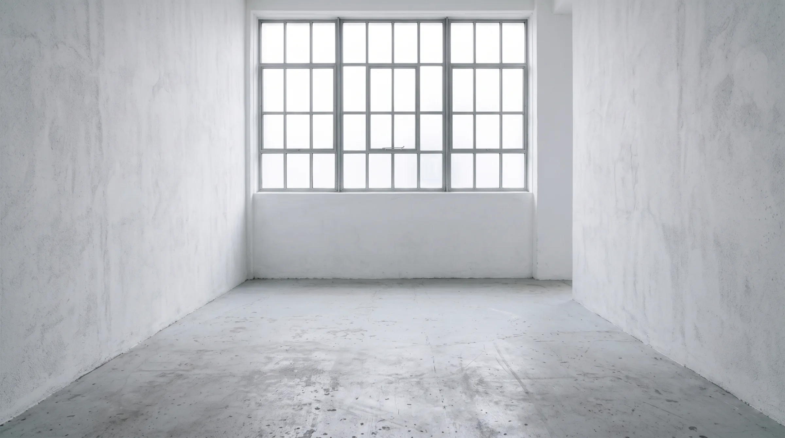
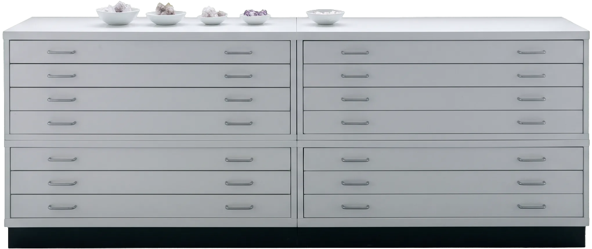
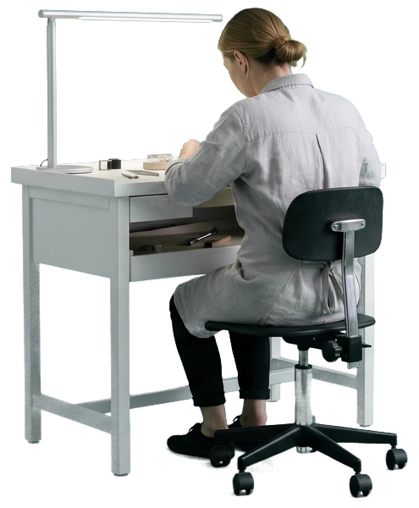
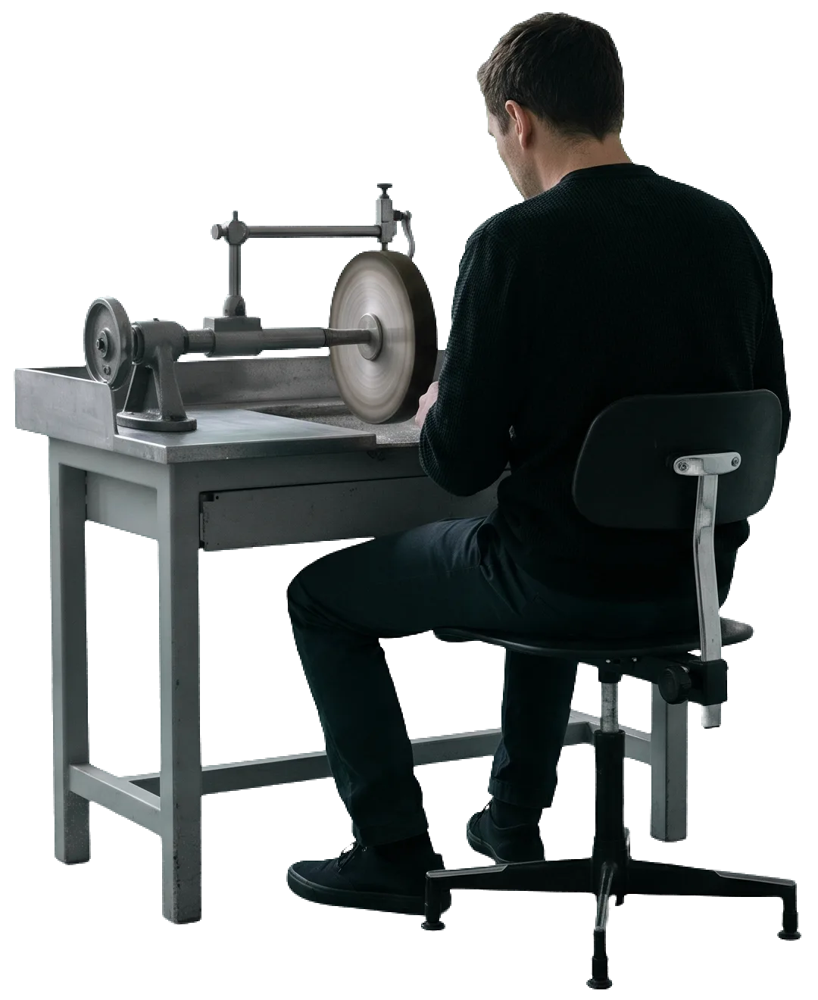
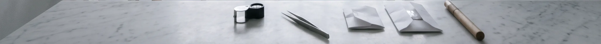
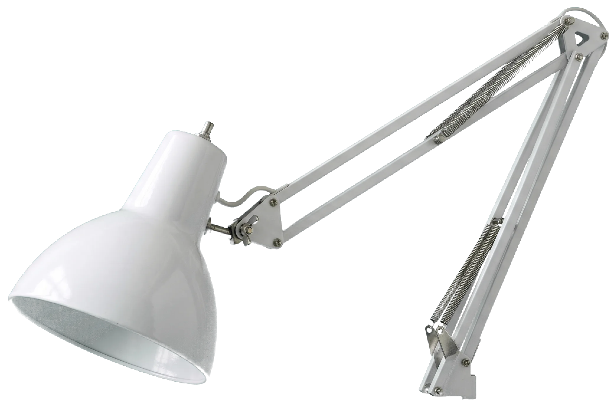
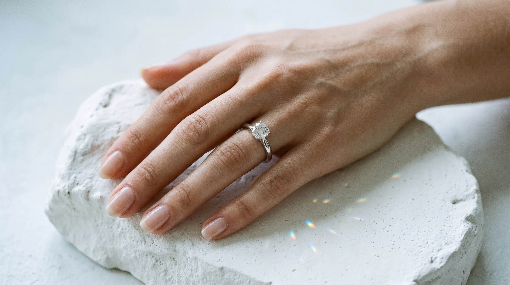

Three billion years, 150 kilometres down.
Carbon held at fifty thousand atmospheres and over a thousand degrees settles, atom by atom, into an octahedron. A volcanic pipe carried this one to the surface in a matter of hours.


Cutters and jewellers at neighbouring benches. The stone never leaves the room.





Tell us what the piece is for. A cutter and a jeweller will meet you at the atelier, with rough to look at.